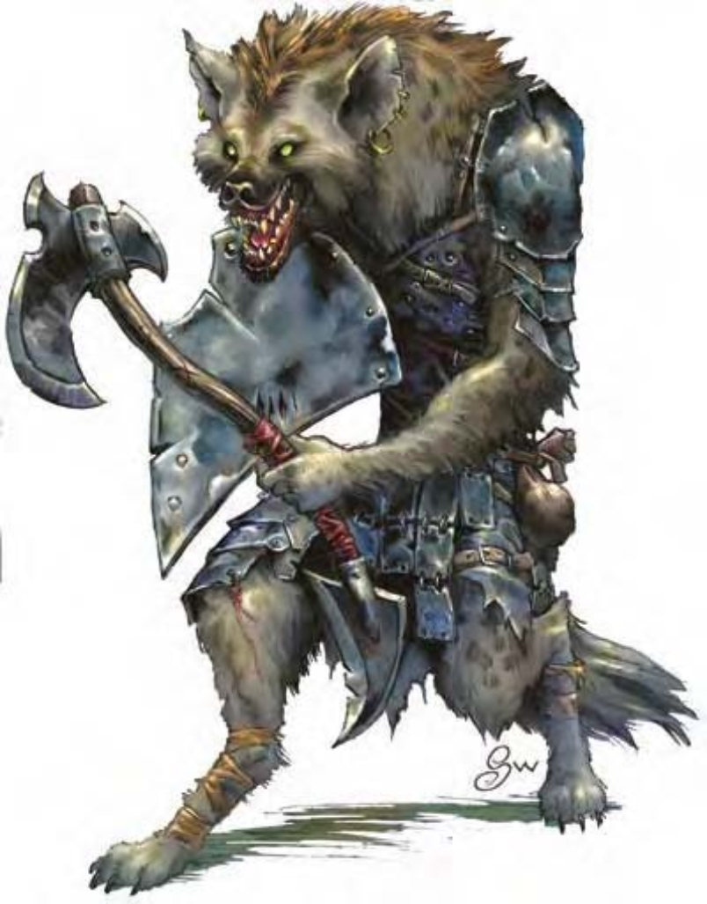

| 资料栏位 | 豺狼人 (Gnoll) 中型人形生物 (豺狼人) |
| 生命骰 | 2d8+2 (11HP) |
| 先攻 | +0 |
| 速度 | 30英尺 (6格) |
| 防御等级 | 15 (+1天生、+2皮甲、+2重型钢盾)、接触10、措手不及15 |
| 基本攻击/擒抱 | +1 / +3 |
| 攻击 | 战斧+3近战 (1d8+2 / ×3)；或短弓+1远程 (1d6 / ×3) |
| 全力攻击 | 战斧+3近战 (1d8+2 / ×3)；或短弓+1远程 (1d6 / ×3) |
| 占据/触及 | 5英尺 / 5英尺 |
| 特殊攻击 | ― |
| 特殊能力 | 黑暗视觉60英尺 |
| 豁免 | 强韧+4、反射+0、意志+0 |
| 属性 | 力量15、敏捷10、体质13、智力8、感知11、魅力8 |
| 技能 | 聆听+2、侦察+3 |
| 专长 | 猛力攻击 |
| 环境 | 热暖带平原 |
| 组织 | 单独、成双、狩猎结党 (2-5，加上1-2只土狼)、一团 (10-100，加上50%非战斗人员，加上每20个成年豺狼人1个3级军士、1个4-6级干部与5-8只土狼)、一族 (20-200，加上每20个成年豺狼人1个3级军士、1-2个4-5级校尉、1个6-8级干部、7-12只土狼；地底巢穴还有1-3个巨魔) |
| 挑战级数 | 1 |
| 宝藏 | 标准 |
| 阵营 | 通常混乱邪恶 |
| 进化 | 视人物职业而定 |
| 等级修正值 | +1 |
这个人形生物比人类稍高。他有着灰色的皮肤、毛茸茸的身子，以及类似土狼、长有灰红鬃毛的头。
豺狼人是一种土狼头的邪恶人形生物，拥有四处游荡的松散组织。
豺狼人的毛色多为土黄或红棕色。
豺狼人为夜行性肉食生物，偏好掠食有智慧的生物 (喜欢听他们尖叫)。豺狼人习惯用肚子思考，其所缔结的同盟 (大多为熊地精、大地精、食人魔、兽人或巨魔) 也常在他们感到饥饿时而破弃。他们不喜欢巨人与大多数的其他人形生物，鄙视手艺。
豺狼人身高约7.5英尺，体重约300磅。
豺狼人通晓豺狼人语。
战斗豺狼人倾向在数量占优势的状态下，使用人海战术与蛮力击倒对手。豺狼人在战斗时没什么纪律，惟有强大的领袖带领，他们才能够划分阶级、集体作战。虽然他们不常设置陷阱，却经常采取伏击，并试图从夹击位置攻击。由于盾牌的关系，豺狼人进行“躲藏” (未受训) 检定时受到-2减值，也因此豺狼人会努力寻找适当的状况 (例如黑暗、掩蔽或对他们有利的地形) 来发动伏击。
豺狼人的社会结构豺狼人部族由其中最强大的个体领导，他以恐怖手段、威胁与蛮力维持权力。若领导者被杀，族中的强者将互相争夺领导地位，若这场争端持续太久或有多名竞争者死亡，一族将分裂为数个集团，分道扬镳。豺狼人尊崇盈亏变动的月相，但多数部族并没有真正的牧师。
集团或部族中非战士的孩童数目与成人相等。豺狼人的居所多为坚固的地表营地或地底居所。豺狼人的俘虏多半成为他们的奴隶，巢穴中每10名成人就有一名奴隶，由于豺狼人食欲旺盛，奴隶 (大多为人类、兽人或大地精) 的耗损率相当高。
他们的种族守护者为妖魔恶魔大君伊诺骨，其外貌就像一只瘦高的豺狼人。大部分的豺狼人宁愿侍奉并尊崇伊诺骨，而非信仰其他的神�o。
豺狼人的人物豺狼人干部通常是巡林客。豺狼人牧师多半信仰杀戮之神厄斯怒，可由下列领域择二：混乱、邪恶、诡术、战争 (偏好武器为钉头锤)。
身为冷酷的猎人，豺狼人人物常为了追踪猎物而前往人类世界探险，担任赏金猎人或商人。
豺狼人人物具有下列种族特性：
― +4力量、+2体质、-2智力、-2魅力。
― 中型。
― 豺狼人的基本行走速度为30英尺。
― 黑暗视觉可达60英尺。
― 种族生命骰：豺狼人起始为2级人形生物，生命骰2d8、基本攻击加值+1，强韧、反射与意志的基本豁免检定则分别是+3、+0及+0。
― 种族技能：豺狼人的人形生物等级使他的技能点数为5× (2+智力调整值)。本职技能为聆听与侦察。
― 种族专长：豺狼人的人形生物等级具有一个专长。
― +1天生防御加值。
― 母语：豺狼人语。额外语言：通用语、龙语、精灵语、地精语、兽人语。
― 适合职业：巡林客。
― 等级修正值：+1